The H2S must be placed on a flat and stable surface. The operating space recommended is 80cm width x 102cm depth x 105cm height, which covers the space required in the back for the exhaust and an AMS 2 Pro to sit on top. [src]
The H2S is recommended to be operated in temperatures between between 15-30C (60-85F). If the temperature is ...
The chamber has an assortment of fans and vents to circulate cool air / blow out hor air (e.g., chamber exhaust fan, auxiliary part cooling fan, and chamber intake vent), but in warmer climates that may not be enough. [src]
H2S's auto-calibration attempts to adjust itself to account for the expected variances between manufactured H2S printers and variances caused by wear. Examples of calibrations include bed leveling (working around variances in the heatbed), motor noise cancellation, and vibration compensation.
Trigger auto-calibration manually by navigating to [Wrench Icon] → Settings → Calibration. Perform auto-calibrate whenever ...
⚠️NOTE️️️⚠️
There are optional modules to perform even tighter calibration. Specifically, the vision encoder.
Filament can be loaded through either an AMS unit (e.g., AMS 2 Pro or AMS HT) or the external spool holder. The external spool holder is used when ...
⚠️NOTE️️️⚠️
The source doesn't cite this, but I know for a fact that TPU is not supported by the AMS 2 Pro and must fed via the external spool holder (unless it's specifically branded as TPU for AMS, which Bambu Lab sells).
To load filament using the AMS 2 Pro, ...
To load filament using the external spool holder, ...
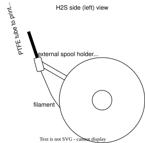
Most Bambu Lab filaments come wound up on twist apart spools. Once the filament on the spool has been all used up, a refill may be purchased (refill means filament without a spool) and reinserted into the empty spool. Refills come pre-wound ready to be inserted directly on to the spool.
To refill a spool ...
Depending on the type of material, some filaments come wound up on cardboard spools. Only plastic Bambu Lab spools are refillable, not cardboard.
The H2S's UI is exposed via a touch screen on the exterior of the front face, located on the top left.
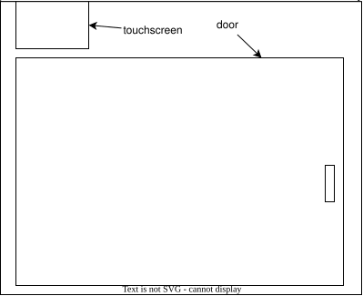
Along left-side of the UI are 5 options, each represented by an icon:
The subsections below provide instructions on how to navigate to important parts of the UI.
To calibrate the H2S, navigate to [Settings] → Calibration → Print Calibration, select the desired calibrations and hit Start. [src]
To print, navigate to [Home] → Print Files and select the drive and file to load. Two drives should be present:
One a file is chosen, select the appropriate Plate and Nozzle (H2S comes with "Texture PEI" plate and "0.4mm Standard" nozzle - these should be selected as defaults). Then, hit Next select the filament to print with. Then, hit Print to begin printing. [src]
To configure the printing speed, navigate to [Controls] → Speed and select either Silent, Standard (default), Sport, or Ludicrous. [src]
⚠️NOTE️️️⚠️
An introductory YouTube video I watched mentioned that the faster the speed is, the lower quality the print will be. Some people are willing to accept lower quality prints in exchange for speed.
To perform movements of the toolhead (XZ axis) and heatbed (Y axis), navigate to [Controls] → Motion and tap the adjustment buttons as necessary. [src]
⚠️NOTE️️️⚠️
This seems to only be for testing purposes and moving things to get at parts? I had to use this feature to get at a thin piece of plastic that popped off and fell on the bottom of the H2S. I moved the heatbed up so I could fit my hand in and reach it.
To perform adhoc extrusion and retraction of filament, navigate to [Controls] → Nozzle & Extruder and use the up/down buttons under Extruder. [src]
⚠️NOTE️️️⚠️
This seems to be for testing purposes. But also, does this have to be done when swapping between AMS 2 Pro and external spool holder?
When nozzle has been swapped, navigate to [Controls] → Nozzle & Extruder and select the nozzle's type under Nozzle. [src]
To set the nozzle's temperature, navigate to [Controls] → Nozzle & Extruder and select the nozzle's temperature under Nozzle. [src]
⚠️NOTE️️️⚠️
This seems to only be for testing purposes and doesn't apply to any prints? AFAIK initiating a new print should unset this as the print needs specific temperatures based on the print and the filament used.
To set the heatbed's temperature, navigate to [Controls] → Heatbed and select the temperature. [src]
⚠️NOTE️️️⚠️
This seems to only be for testing purposes and doesn't apply to any prints? AFAIK initiating a new print should unset this as the print needs specific temperatures based on the print and the filament used.
To set the chamber's temperature, navigate to [Controls] → Chamber and select the temperature. [src]
⚠️NOTE️️️⚠️
This seems to only be for testing purposes and doesn't apply to any prints? AFAIK initiating a new print should unset this as the print needs specific temperatures based on the print and the filament used.
To turn the chamber's light on/off, navigate to [Controls] and toggle the Light switch. [src]
To configure the H2S's internal climate, navigate to [Controls] → Air Condition and select either Cooling or Heating. Individual parts that control the climate (e.g., fans, heaters, and exhausts) are listed and can be individually controlled. [src]
When the mode is set to ...
To select which filaments are in the AMS 2 Pro and / or external spool holder, navigate to [Filament] and select the desired spool to input the type, color, and manufacturer of filament. Bambu Lab filaments come with RFID that allows the AMS 2 Pro to automatically identify material and color. [src]
When a filament runs out, the H2S and attached AMS 2 Pro unit automatically swap to a second spool to continue printing, provided that second spool has the same brand, color, and material of the original spool being printed with. To enable auto refill, navigate to [Settings] → AMS Options and select AMS Auto-Refill. . Then, navigate to [Filament], select the wrench icon, and select Auto Refill to view refill relationships. [src].
⚠️NOTE️️️⚠️
On the H2D, there are 2 extruders (left and right) and apparently each of the H2D's AMS 2 Pro units is assigned to one of these heads (there may be multiple AMS 2 Pros per printer). The second spool must be in an AMS 2 Pro unit assigned to the same extruder for auto refill to use it.
To dry filament, ensure the spool is loaded into the AMS 2 Pro and navigate to [Filament] and find the water droplet icon. Below the icon should be a humidity sensor reading. Select the water droplet icon and either ...
..., then select Start. [src]
⚠️NOTE️️️⚠️
What happens when the filaments within hte AMS 2 Pro aren't all the same material? It seems there might be some guard rails preventing you from doing this with certain mixes of materials.
When drying high-temperature filament, you need to take out the low-temperature filament. For example, when drying ABS, PLA filament cannot be placed in the AMS.
The following table summarizes key characteristics of filaments supported by the H2S (as of time of writing). The column(s) ...
| Name | Stiffness | Impact Strength | Heat Deflection Temperature (ISO 75) |
Saturated Water Absorption Rate | Nozzle temperature | Heatbed temperature | Chamber temperature | Drying | Resistance |
|---|---|---|---|---|---|---|---|---|---|
| PLA [src] | 1.5/5 | 2/5 | 1.8 MPa 54C 0.45 MPa 57C |
25C 55% RH 0.43% | 190-230C | 35-45C | 25-45C | 50C 8h | Acid: no Alkali: no Organic solvent: some no Oil/grease: most yes Flammable: yes |
| PLA-CF [src] | 2/5 | 1.5/5 | 1.8 MPa 54C 0.45 MPa 55C |
25C 55% RH 0.42% | 210-240C | 35-45C | 55C 8h | Acid: no Alkali: no Organic solvent: some no Oil/grease: most yes Flammable: yes |
|
| PETG HF [src] | 1/5 | 2.5/5 | 1.8 MPa 62C 0.45 MPa 69C |
25C 55% RH 0.40% | Acid: no Alkali: no Organic solvent: some no Oil/grease: most yes |
||||
| PETG-CF [src] | 1.5/5 | 3/5 | 1.8 MPa 67C 0.45 MPa 74C |
25C 55% RH 0.30% | |||||
| ABS [src] | 1/5 | 3/5 | 1.8 MPa 84C 0.45 MPa 87C |
25C 55% RH 0.65% | 240-270C | 80-100C | 45-60C | 80C 8h | Acid: yes Alkali: yes Organic solvent: some no Oil/grease: some no Flammable: yes |
| ABS-GF [src] | 1.5/5 | 1/5 | 1.8 MPa 88C 0.45 MPa 99C |
25C 55% RH 0.53% | 260-280C | 90-100C | 60-70C | 80C 8h | Acid: yes Alkali: yes Organic solvent: some no Oil/grease: some no Flammable: yes |
| ASA [src] | 1/5 | 3/5 | 1.8 MPa 92C 0.45 MPa 100C |
25C 55% RH 0.45% | 240-270C | 80-100C | 45-60C | 80C 8h | Acid: yes Alkali: yes Organic solvent: some no Oil/grease: some no Flammable: yes |
| ASA-CF [src] | 2/5 | 0.5/5 | 1.8 MPa 102C 0.45 MPa 110C |
25C 55% RH 0.33% | |||||
| PC [src] | 1.5/5 | 2.5/5 | 1.8 MPa 117C 0.45 MPa 112C |
25C 55% RH 0.25% | 260-280C | 90-100C | 45-60C | 80C 8h | Acid: no Alkali: no Organic solvent: some no Oil/grease Flammable: yes |
| PC FR [src] | 1/5 | 3.5/5 | 1.8 MPa 108C 0.45 MPa 113C |
25C 55% RH 0.12% | 260-280C | 90-100C | 80C 8h | Flammable: retardant | |
| TPU 95A HF [src] | 0.5/5 | 5/5 | N/A | 25C 55% RH 1.08% | |||||
| TPU 90A [src] | 0.5/5 | 5/5 | N/A | 25C 55% RH 0.61% | |||||
| TPU 85A [src] | 0.5/5 | 5/5 | N/A | 25C 55% RH 0.67% | |||||
| TPU for AMS [src] | 0.5/5 | 5/5 | N/A | 25C 55% RH 1.20% | 220-240C | 30-35C | 70C 8h | Acid: no Alkali: no Organic solvent: some no Oil/grease: most yes Flammable: yes |
|
| PA6-CF [src] | 3/5 | 3/5 | 1.8 MPa 164C 0.45 MPa 186C |
25C 55% RH 2.35% | |||||
| PA6-GF [src] | 2/5 | 2/5 | 1.8 MPa 158C 0.45 MPa 182C |
25C 55% RH 2.56% | |||||
| PAHT-CF [src] | 2.5/5 | 3.5/5 | 1.8 MPa 170C 0.45 MPa 194C |
25C 55% RH 0.88% | |||||
| PET-CF [src] | 3/5 | 2.5/5 | 1.8 MPa 182C 0.45 MPa 205C |
25C 55% RH 0.37% | 260-290C | 80-100C | 45-60C | 80C 8-12h | Acid: no Alkali: no Organic solvent: some no Oil/grease: most yes Flammable: yes |
| PPA-CF [src] | 5/5 | 3/5 | 1.8 MPa 196C 0.45 MPa 227C |
25C 55% RH 1.30% | |||||
| PPS-CF [src] | 4/5 | 1.5/5 | 1.8 MPa 235C 0.45 MPa 264C |
25C 55% RH 0.05% | 310-340C | 100-120C | 60-90C | 100-140C 8-12h | Acid: yes Alkali: yes Organic solvent: yes Oil/grease: yes Flammable: retardant (self-extinguishing when away from fire) |
⚠️NOTE️️️⚠️
Stiffness and impact strength columns come from the Bambu Lab product page for the specified filament. Remaining columns come from the Bambu Lab technical document sheet (TDS) for that product.
A plate that sits on the heatbed and serves as the print surface. There are different types of build plates, each with different properties targeting different filament materials (4 as of time of writing):
The following table summarizes filament materials supported and material requirements for each build plate.
Of the build plates listed, the ...
⚠️NOTE️️️⚠️
Textured PEI Plate only supports glue sticks, not liquid glue? The table just says "Yes" or "No" but doesn't explicitly mention either, but the header of that column says "Requires Glue Stick?" so I specifically put down stick.
Textured PEI Plate's buy page (where the Textured PEI portion of the table above comes from) also had an extra column about whether the cover should be removed, but that has nothing to do with the build plate? It's to prevent heat creep?
Bambu Studio is H2S's desktop software. It provides access to MakerWorld (a repository of printable object), processes 3D models for printing by slicing them, and controls and gets feedback from the H2S. [src] Bambu Studio works with many brands of 3D printers, not just Bambu Lab printers. [src].
⚠️NOTE️️️⚠️
There's also a software product called Bambu Suite, but that's for cutting and engraving while Bambu Studio is for printing.
⚠️NOTE️️️⚠️
This was written using Bambu Studio v2.6.0.51.
Bambu Studio has 6 main screens (referred to as tabs), which can be navigated between using the top toolbar:
Above the top toolbar is the main menu, packed to condensed space. Next to the packed main menu are a few quick access buttons: Save, undo, and redo. Regardless of which screen you're on, the top toolbar (and main menu and quick access buttons) should always be present.
The standard workflow is to plan out what and where get things printed on the Prepare screen, then review how the print will get sliced along with estimations on the Preview screen, then initiate the print.
Bambu Studio saves and loads project state as a 3MF file.
Alternatively, Bambu Studio's Home screen integrates MakerWorld. MakerWorld is an online repository of printable projects, openable as if opening a local project. [src]
Bambu Studio has a 3D viewport on both the Prepare screen and the Preview screen.
Bambu Studio's Prepare screen is for transforming models for print (e.g., orientation, scale, position, and color) as well as configuring print settings (e.g., layer height and infill density).
Prepare viewport controls:
| Action | Shortcut |
|---|---|
| Rotate camera | 🖰 Left-drag (ensure no object is selected) |
| Pan camera | 🖰 Right-drag |
| Zoom camera | 🖰 Scroll wheel |
| Select object | 🖰 Left-click object |
| Select additional object | Ctrl + 🖰 Left-click object |
| Select multiple objects | Shift + 🖰 Right-drag green selection rectangle over objects |
| Deselect objects | 🖰 Left-click area without object |
| Select all objects | Ctrl + A |
| Move selected objects 10mm | Arrow key (←, ↑, →, or ↓) (ensure object is selected) (movement occurs relative to camera's view) |
| Move selected objects 1mm | Shift + Arrow key (←, ↑, →, or ↓) (ensure object is selected) (movement occurs relative to camera's view) |
| Undo | Ctrl + Z |
| Redo | Ctrl + Y |
Bambu Studio's Preview screen is for exploring slices. Each screen is partitioned into a 3D viewport and a left side-bar.
Preview viewport controls:
| Action | Shortcut |
|---|---|
| Move vertical slider | ↑ or ↓ |
| Move horizontal slider | ← or → |
| Toggle single layer view | L |
| Pan camera | 🖰 Right-drag |
| Zoom camera | 🖰 Scroll wheel |
| Select multiple objects | Shift + 🖰 Right-drag green selection rectangle over objects |
| Select additional object | Ctrl + 🖰 Left-click object |
| Select all objects | Ctrl + A |
| Move selected objects 10mm | Arrow key (←, ↑, →, or ↓) (ensure object is selected) (movement occurs relative to camera's view) |
| Move selected objects 1mm | Shift + Arrow key (←, ↑, →, or ↓) (ensure object is selected) (movement occurs relative to camera's view) |
| Undo | Ctrl + Z |
| Redo | Ctrl + Y |
To the right of the 3D viewport is a sidebar on the left-hand side.

The sidebar contains a ...
⚠️NOTE️️️⚠️
A full accounting of properties under Process is out of scope. They'll be covered on an adhoc basis in the subsequent sections.
↩PREREQUISITES↩
Import 3D models into the project either via ...
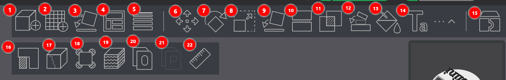
The file formats supported by the import function span both graphics formats (e.g., OBJ) and manufacturing formats (e.g., STL).
⚠️NOTE️️️⚠️
Bambu Studio can export the project's 3D models under File → Export.
⚠️NOTE️️️⚠️
A complete accounting of file formats isn't appropriate here. Just note that, if you importing SVGs, SVGs have no height. Once an SVG is imported, Bambu Studio gives it a tiny height and then you can scale it to make it taller.
Alternatively, Bambu Studio's Home screen integrates MakerWorld. MakerWorld is an online repository of printable projects. MakerWorld projects can't be imported directly into the current Bambu Studio project. However, it is possible to open a MakerWorld project, save it as a 3MF file (or export as some other file format), and import that file into an existing project. [src]
↩PREREQUISITES↩
In the Prepare screen's 3D viewport, models can be moved by either ...
selecting models, then left-clicking them and dragging.
using the auto-arrange tool in Prepare screen's toolbar (button 4, keyboard shortcut A), which will arrange all models regardless of which are selected.
selecting models, then hitting arrow keys for 10mm movement. [src]
selecting models, then hitting Shift + arrow keys for 1mm movement. [src]
selecting models, then using the move tool in the Prepare screen's toolbar (button 6, keyboard shortcut M), which will present both movement axis arms that can be left-click drag and a pop-up with coordinates and common alignment and distribution options.

The screenshot above has the following sections:
Object coordinates: Controls and reflects the object's position. As the position fields are updated, the drop-down defines the anchor point from which the movement occurs:
Distribution and alignment: Organizes the positions of a set of objects relative to each other and the build plate. The drop-down defines whether the distribution/alignment happens against ...
Movement axis arms: Sets object's position via dragging arms. [src]
⚠️NOTE️️️⚠️
Models typically can't be lifted off the build plate without first merging. See Bambu Studio/Model Combining.
↩PREREQUISITES↩
In the Prepare screen's 3D viewport, selected models can be manually rotated by using the rotation tool in Prepare screen's toolbar (button 7, keyboard shortcut R), which will present rotational axis circles that can be left-click dragged and a pop-up with angles.
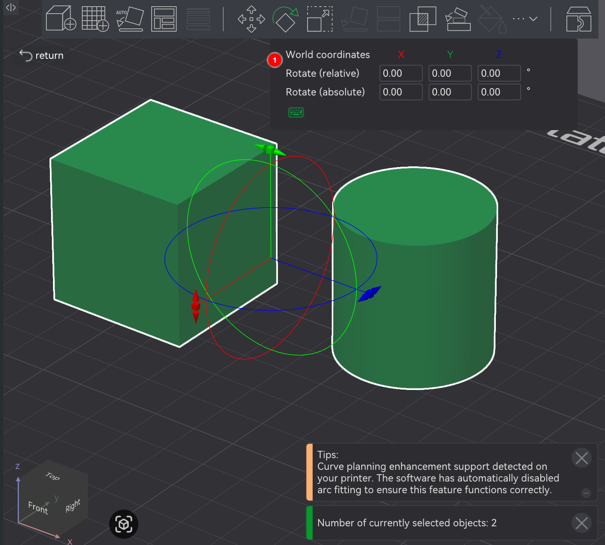
Alternatively, a model may be rotated via ...
↩PREREQUISITES↩
In the Prepare screen's 3D viewport, selected models can be manually scaled by using the scale tool in Prepare screen's toolbar (button 8, keyboard shortcut S), which will present scale axis points that can be left-click dragged and a pop-up with scaling parameters.

The screenshot above has the following sections:
Coordinates - ?
Scale - Percentage scaled vs original size (X, Y, and Z).
Size - Absolute size on an axis (X, Y, and Z).
uniform scale: If clicked, other axis will maintain proportions by automatically scaling to based on a single axis that was scaled. [src]
⚠️NOTE️️️⚠️
I couldn't figure out what the Coordinates dropdown actually does?
↩PREREQUISITES↩
In certain cases, two models may need to combine into one for printing, such that they print as a single object vs two separate objects.
In the Prepare screen's 3D viewport, select two or more models, then right-click to open the context menu and select Merge. Merged models are placed them under a single assembly.

Once models are within a single assembly, they can be manually moved into each other and / or levitated off the build plate using the move tool (Prepare screen's toolbar button 6, keyboard shortcut M). If models aren't merged but occupy the same space, slicing will print them as if they're distinct. That is, if two models occupy the same space, the outer shell / wall of both objects will be drawn inside each other.

⚠️NOTE️️️⚠️
Doing a mesh boolean union also fixed this outer wall drawing problem.
🔍SEE ALSO🔍
⚠️NOTE️️️⚠️
You can push models into each other without putting them under the same assembly, but it'll complain during slicing.
Alternatively, two models can be repositioned and reoriented such that they touch each other using the assembly tool (Prepare screen's toolbar button 12, keyboard shortcut Y). The assembly tool opens a open a pop-up used to target how and where the models touch.

The assembly tool has two Mode: options
Point and Point Assembly: Touches models on specific points (e.g., vertex).
Click on a point on the first model and click on point on the second model. The first point should highlight as cyan while the second fact should highlight as purple, and sections 2 and 3 of the screenshot should update to indicate that a selection's been made. From there, XYZ coordinate fields should show up in the dialog. Set those fields to 0 to bring the points together.
Face and Face Assembly: Touches models on specific faces.
Click on a face of the first model and click on a face of the second model. The first face should highlight as cyan while the second fact should highlight as purple, and sections 2 and 3 of the screenshot should update to indicate that a selection's been made. From there, the ...
⚠️NOTE️️️⚠️
Technically, merging into an assembly isn't required to use the assembly tool in the toolbar. But, if the intent is to stack the models on top of each other such that one of them has a face off the build plate, it won't work (both models will be forced back down to touch the build plate).
⚠️NOTE️️️⚠️
The mesh boolean tool (button 11, keyboard shortcut B) can be used to merge the parts of an assembly back into a single model. The mesh boolean tool takes multiple models (e.g., parts of an assembly or multiple high-level models) and performs a boolean operation on them (e.g., union, intersect, subtraction). So, to combine an assembly to a single model, use the union option.
🔍SEE ALSO🔍
↩PREREQUISITES↩
In the Prepare screen's 3D viewport, selected models can be painted by using the paint tool in Prepare screen's toolbar (button 13, keyboard shortcut N), which will present a pop-up with scaling parameters / controls.

⚠️NOTE️️️⚠️
Ensure more than 1 filament is included in the project via the Project Filaments section in the Prepare screen's left side-bar. Otherwise it'll be impossible to paint anything as there'll just be 1 color.
The remaining fields change based on which painting tool is used. When the paint tool is ...
circle and sphere use a circle and sphere respectively to paint on faces. Circle applies paint to intersecting areas of faces inside the circle, while sphere applies paint to the intersecting areas of faces inside the sphere (flat vs volume). Other than that, the two painting tools are essentially the same.
The option ...
triangle, paints the entirety of triangles that make up faces.
The option ...
height range, paints the entirety of a layer range.
The option ...
fill, paints everything connected based on a connection criteria.
The option ...
gap fill, fills in small gaps based on the color of neighboring faces. This is used to clean up edges that the fill tool couldn't reach into. Unlike the other tools above, this tool doesn't use the mouse. Instead, the Apply button is used to apply gap filling to the entire model.
⚠️NOTE️️️⚠️
There's a Gap area slider here but I don't know definitively what it does and the documentation doesn't state it either.
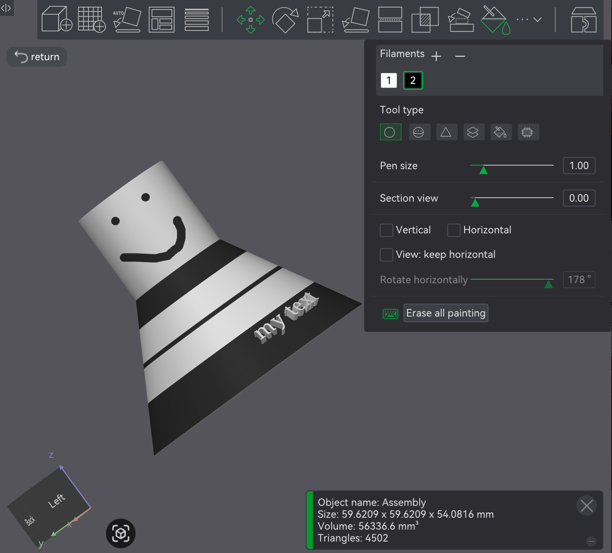
↩PREREQUISITES↩
Areas of a model that are overhangs may require supports. Supports are temporary additions added under these parts to help keep them stable during printing (e.g., prevent sagging). Supports easily snap off once the print completes.
To have Bambu Studio automatically generate supports, the option must be explicitly enabled. In the Prepare screen's side-panel, navigate to the Support tab and turn on Enable support the Support subsection. Supports will only be visible in the Preview screen (the screen responsible for showing slices), not this screen (Prepare screen).
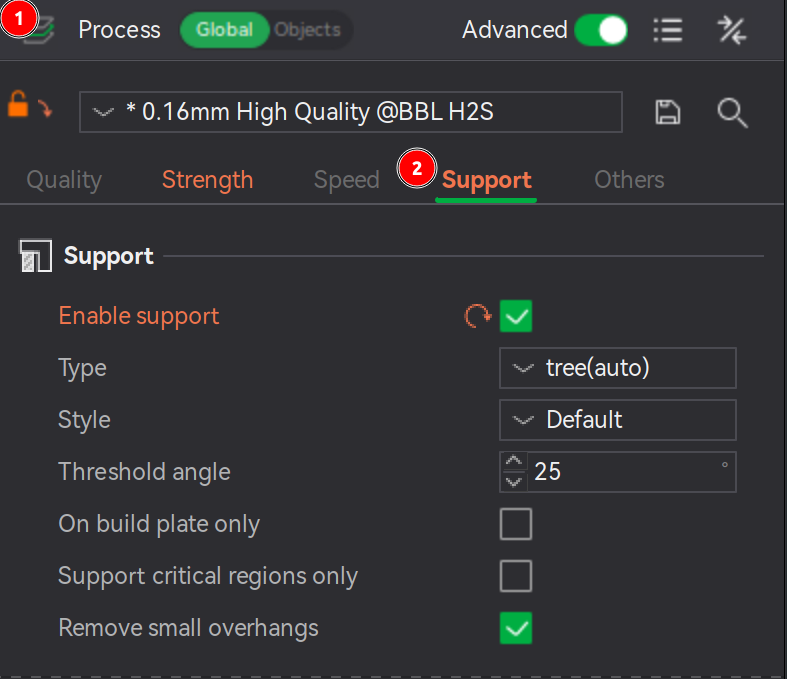
⚠️NOTE️️️⚠️
What features qualify as a "critical region"? The documentation goes into further details: Cantilevers and sharp tails.
No sense going over that information here.
⚠️NOTE️️️⚠️
The documentation goes over advanced controls near the second half of the page. It might be too much detail to cover here.
Supports come in two types: Normal and Tree.
Each type comes in either auto mode or manual mode. When the mode is ...
auto, supports are automatically generated based on the support parameters (e.g., threshold angle) and the user can choose to include / exclude areas (e.g., via support painting).
The areas targeted for supports are defined by ...
manual, the user is expected to specify areas of the model that need supports (e.g., via support painting).
🔍SEE ALSO🔍
The support's type defines the geometry generated:
Normal support: Overhangs are projected directly down to the heatbed.
Normal supports come in two styles:
Tree support: Overhangs are sampled to a set of circles propagating down to the heatbed, weaving around obstacles and possibly enlarging to provide better strength.
Tree supports come in many styles:
⚠️NOTE️️️⚠️
See source to figure out how default switches between and organic. Out of scope for this document.
Normal supports work best with large planar overhangs, giving better surface quality vs tree supports. Tree supports often give better results with complex models where overhang are small and / ot not planar. When in doubt, use tree supports in hybrid style, because it will explicitly check for planar overhangs and those areas to generate normal supports while the remaining areas get tree supports. [src]
↩PREREQUISITES↩
In certain cases, it's beneficial to manually specify which areas of the model to explicitly support and unsupport. Two mechanisms exist for this: painting and blockers/enforcers.
Painting: In the Prepare screen's 3D viewport, select a model and click support painting in the Prepare screen's toolbar (button 16, keyboard shortcut L). Bambu Studio will open a pop-up and present an isolated view of the model where areas can be painted as include vs exclude.
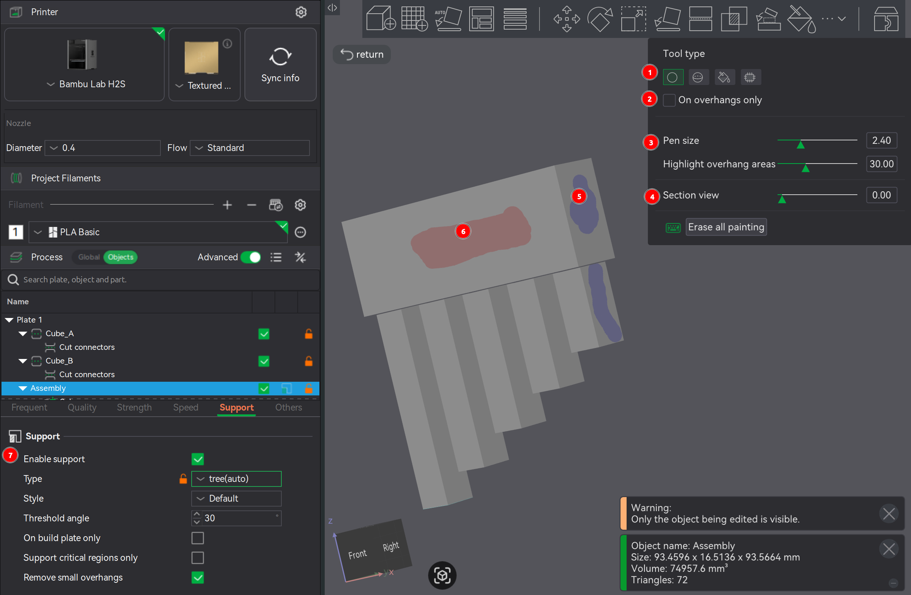
To paint, select a Tool type. The tools configuration options will show up directly underneath. Regardless of the tool type, ...
Chances are the viewport will need to move around during the painting process. To move the viewport rather than paint (e.g., move camera, rotate camera, and zoom camera), use the same viewport controls as normal with the exception that any mouse button presses required are not on the model to be painted.
On overhangs only defines whether surfaces available for painting are limited to only those deemed as needing supports (e.g., as defined by Threshold angle).
Blockers/Enforcers: By adding a secondary model and intersecting with the supported model, supports are explicitly added / removed from the intersecting portion. Right-click a model to get its context menu, and either navigate to Support blocker or Support enforcer. Regardless of which you choose, the same model options will display for both (e.g., load a custom model, preloaded cube, or preloaded cylinder,). If ...

Where supports generate depends on type of supports being added (e.g. tree supports). If the type is set to ...


⚠️NOTE️️️⚠️
The example above isn't a valid print, but for some reason Bambu Studio isn't showing a warning / error popup slicing.
Interface layers are support layers that touch the model, while the rest of the support body is referred to as the base. Bambu studio allows targeting specific materials for a support's base and interface. In the Prepare screen's side-panel, navigate to the Support tab and to the Filament for Supports subsection. The ...
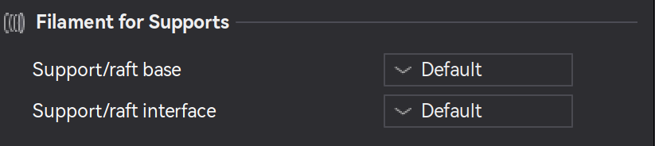
↩PREREQUISITES↩
A raft is a type of support that elevates a model off the build plate. Rafts are commonly used for materials that are prone to warping (e.g., ABS).
In the Prepare screen's side-panel, navigate to the Support tab and to the Raft subsection. The ...
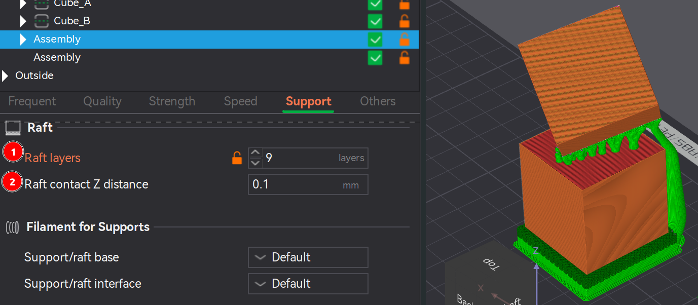
⚠️NOTE️️️⚠️
The source mentions a couple of other parameters that are not present: First layer density and first layer expansion. I'm not sure if these have been removed, but I don't see them in my version of Bambu Studio.
Raft contact Z distance description inside Bambu Studio mentions that the parameter is ignored for "soluble interfaces". I'm not sure what that term means. Also, I don't know why there'd need to be a gap between the raft and the model? How would it stop the model from sagging if there's a gap?
In certain cases, a model may either need to be cut (e.g., oversized for printer) or may benefit from being cut (e.g., minimize need for supports or make it easier to sand/paint/finish). Cut pieces are typically assembled and fused back together after printing (e.g., glue, pen welding, joinery).
In the Prepare screen's 3D viewport, a model can be cut by selecting it and clicking cut tool in the Prepare screen's toolbar (button 10, keyboard shortcut C), which will open a pop-up, present a cutting plane in the 3D viewport, and present cutting plane rotational axis and offset height controls in the 3D viewport.
The cutting tool has two modes, chosen using the Mode dropdown at the top of the pop-up:
Planar cuts the model using a flat plane.
Rotation reflects the 3D viewport's cutting plane rotational control.
Movement / Height reflects the 3D viewport's cutting plane height control.
Add connectors manipulates the cut final pieces to add joinery mechanisms, making them easier to reassemble.
If clicked, the cut plane is highlighted in the viewport and a pop-up of joinery options is presented (e.g., plug, snap, and thread) along with parameters for each options (e.g., depth and size). Set the joinery options as desired and click on the cut plane to place the joinery. Most joinery options are self-explanatory.
⚠️NOTE️️️⚠️
For the Plug type, if you're confused about frustum vs prizm: Frustum tapers the sides as it goes up (similar to a pyramid) while the prizm option keeps the sides straight.
To flip between the two sides of the cut plane, click the Flip cut plane button.
To force the joinery in the middle of the cut plane, sleect Middle of geometry before clicking.
After cut defines how the cut pieces are treated:
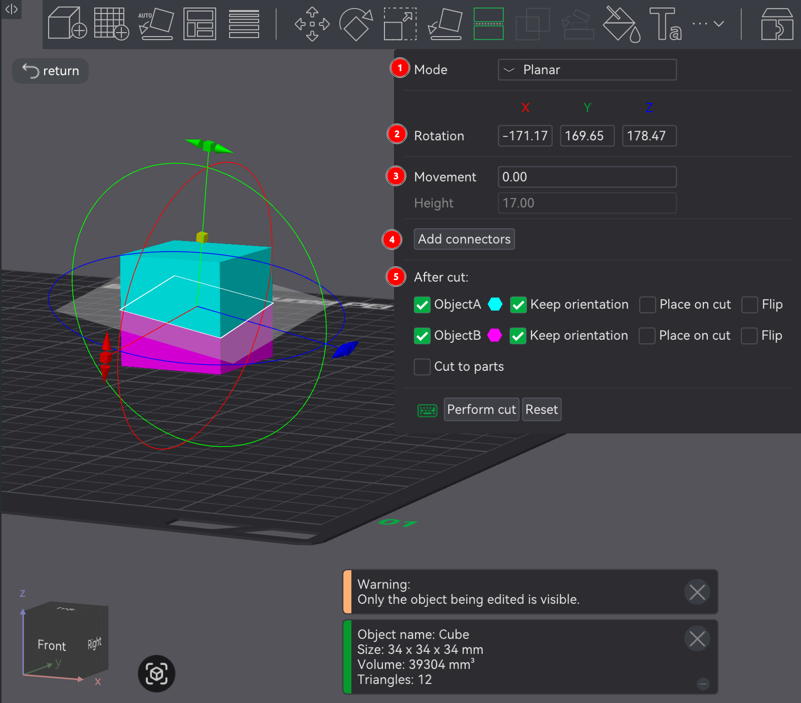
Dovetail cuts the model using a a flat plane with a flared-out trapezoid indent, referred to as a dovetail. The two pieces are intended to slide into each other where the indent cutout is.
Rotation reflects the 3D viewport's cutting plane rotational control.
Movement / Height reflects the 3D viewport's cutting plane height control.
Groove manipulates the indent in the cut plane.
Most of the options are self-explanatory. Groove Angle controls size asymmetry between the two sides of the indent. Flap Angle controls the angle at which the indent's flaps fan out.
After cut defines how the cut pieces are treated:

⚠️NOTE️️️⚠️
The mesh boolean tool (button 11, keyboard shortcut B) can be used to merge the parts of an assembly back into a single model. The mesh boolean tool takes multiple models (e.g., parts of an assembly or multiple high-level models) and performs a boolean operation on them (e.g., union, intersect, subtraction). So, to combine an assembly to a single model, use the union option.
↩PREREQUISITES↩
In the Prepare screen's 3D viewport, selected models can have set operations applied (e.g., union, intersection, and subtraction) by using the mesh boolean tool in Prepare screen's toolbar (button 11, keyboard shortcut B), which present a pop-up with which which operations to apply.

The mesh boolean tool has 3 possible operations:
Regardless of which you pick, you can specific which of the selected models to apply the operation to. The resulting operation creates a single model with the chosen set operation applied (not an assembly of models, but a single model).
Given that the mesh boolean tool creates a single new model, the resulting single model typically doesn't encounter overlap issues during slicing. For example, if models aren't union'd but occupy the same space, slicing will print them as if they're distinct. That is, if two models occupy the same space, the outer shell / wall of both objects will be drawn inside each other.
⚠️NOTE️️️⚠️
Merging two models under the same assembly also fixed this outer wall drawing problem.
🔍SEE ALSO🔍
↩PREREQUISITES↩
Text can be placed on a model, extruded from a model, indented on to a model, or placed as a standalone extruded model on its own.
To generate standalone text, in the Prepare screen's 3D viewport, click the text shape tool in the Prepare screen's toolbar (button 14, keyboard shortcut T). Text wil show up in the middle of the build plate on the 3D viewport along with a pop-up where the text and its settings (e.g., font parameters) can be changed.
All parameters in the pop-up should be self explanatory, with the exception of Angle. Angle is the rotation of the text, which reflects the rotation circle in the 3D viewport.

To generate text on a model, in the Prepare screen's 3D viewport, select the model and then click the text shape tool in the Prepare screen's toolbar (button 14, keyboard shortcut T). Text wil show up on the middle of the build plate on the 3D viewport along with a pop-up where the text, its settings (e.g., font parameters), and how its placed on the model can be changed.
The parameters are the same as the parameter before, except for Mode and Operation.
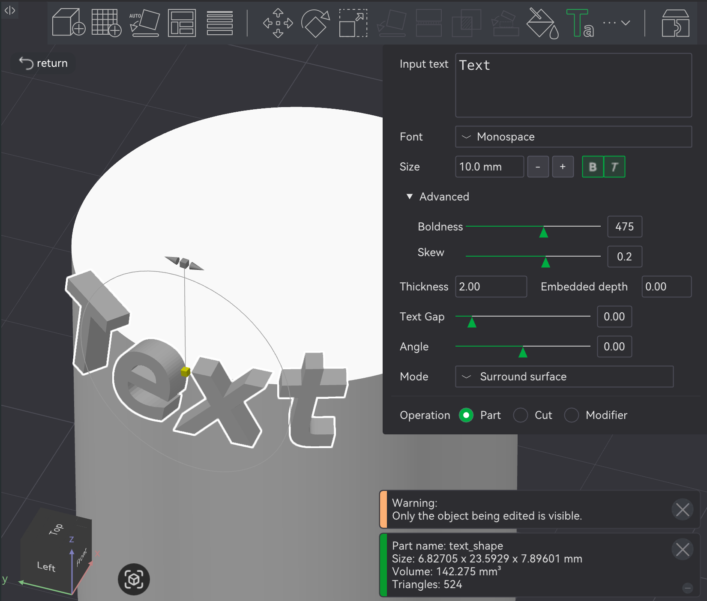
Mode defines how the text interacts with the model:
⚠️NOTE️️️⚠️
At the very top of the example model below is the projection option. Note that the top of the text is cut off.

Operation defines how the text is applied to the model:
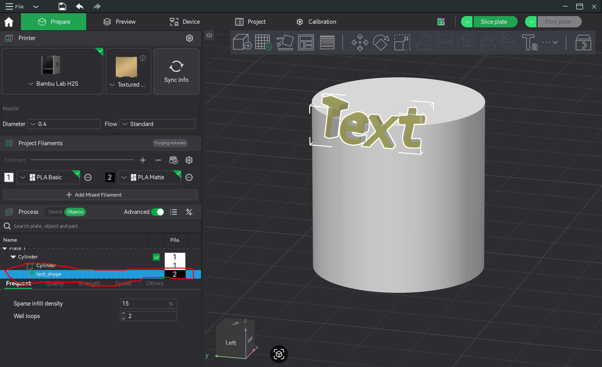
print speed?
Automatic Material System 2 Pro (AMS 2 Pro) - Automatic Material System 2 Pro, an extension to the H2S that manages filament(s). The AMS 2 Pro ...
The AMS 2 Pro supports 4 spools per unit, and supports chaining up to 4 AMS 2 Pro units together to support up to 16 spools per print. Additionally, the 4 chained AMS 2 Pro units may be chained up even further by 8 AMS HT units, enabling up to 24 spools per print. [src] [src]
Automatic Material System High Temperature (AMS HT) - Automatic Material System High Temperature, an extension to the H2S that manages handling engineering-grade high-temperature filaments that are sensitive to moisture (e.g., PPS and PPA). It has better a better motor, filament drying (up to 85 celsius), and better humidity control than the AMS 2 Pro. However, it only seems to support 1 spool.
external spool holder - A spool holder attached to the H2S's left face exterior, near the rear. The external spool holder is intended to be used when either an AMS 2 Pro isn't available or the filament material isn't supported by the AMS 2 Pro.
toolhead - An assembly consisting of ...
Filament enters the nozzle through the PTFE connector located at the top, where the extruder motor grabs it and pushes it into the hotend located at the bottom. The hotend's nozzle poking out of the enclosure is sandwiched between cooling ducts, where the part cooling fan directs air to rapidly cool filament as its printed.
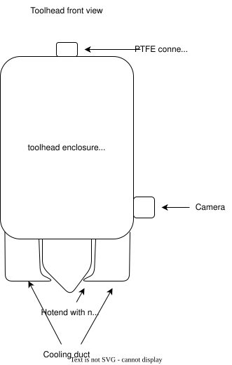
The bottom bottom right-side of the toolhead has a toolhead camera attached. The toolhead moves left-right on the X-Axis linear rail. The X-Axis linear rail itself moves forward and backward on the Y-Axis. These rails are how the toolhead positions itself for printing. [src]
⚠️NOTE️️️⚠️
It sounds like the camera and the part cooling fan (and the railing) are not a part of the toolhead itself? These are attachments.
filament sensor - A sensor detecting the presence of filament in the toolhead, located where the filament is fed into the toolhead. The filament sensor prevents printing without filament, allowing prints to resume once new filament is available. [src]
toolhead camera - A camera attached to the toolhead, used for calibrating motion accuracy and build plate recognition. [src]
extruder - A motor within the toolhead that grips and moves filament between the PTFE connector to the hotend.
hotend - An assembly responsible for melting filament for deposit on to a print. A hotend includes a ...
A silicone sock fits over nozzle, insulating it from the cooling from the part cooling fan.
⚠️NOTE️️️⚠️
In the documentation, the coldend is also referred to as a heat sink.

On the H2S, the hotend is part of the toolhead. A heating assembly within the toolhead clamps on to and heats the hotend, and is responsible for heating and temperature regulation of the nozzle.
Unlike the H2S, some other printers have a different structure: The coldend is separated from the hotend as its own distinct piece and the hotend comes with heating, temperature regulation, and other hardware pieces builtin. On the H2S, the combination of coldend and nozzle are referred to as the hotend. [src]
part cooling fan - A fan located at the base of the toolhead. The part cooling fan directs are to the cooling ducts that sandwich the tip of the hotend's nozzle, rapidly cooling printed filament. [src]
CoreXY - H2S's system for moving the toolhead front-back and left-right. The system is comprised of a pair of synchronized motors within the H2S responsible for moving the toolhead on the X and Y axes: A motor and B motor. The motors are located at the rear inside face of the H2S, near the top. The B motor is on the left and the A motor is on the top.
The motors connect through the X-axis linear rail and the Y-axis linear rods via a pair of belts. The ...
Both motors work in tandem to coordinate movement in both directions (e.g., one motor isn't solely responsible on an axis).
⚠️NOTE️️️⚠️
There's also Z-axis threaded and linear rods, responsible for moving the heatbed up-down. It's unclear if these rods are part of the CoreXY movement system. Their description is included under the CoreXY system but it feels separate as it's not controlling the toolhead's position but the heatbed's position. [src]
Z-axis threaded and linear rods - Two threaded rods located at the front inside face of the H2S, on the left and right. These rods move the heatbed up-down.
heatbed - A heat controlled surface within the H2S that magnetically secures the build plate. The heatbed moves up-down using the Z-axis linear rods, allowing the toolhead to print one layer after the other onto the attached build plate.
Depending on the material being printed, the heatbed's controlled heating may be required or otherwise beneficial for print quality (e.g., adhesion and / or reducing printing artifacts).
status light - A light bar just below the heatbed, facing forward and running side-to-side. The light bar changes color to show the operating status of the H2S:
build plate - A plate that sits on the heatbed and serves as the print surface. There are different types of build plates, each with different properties targeting different filament materials. [src] Build plates are intended to be consumable, meaning that in comparison to other major components they're intended to be replaced much sooner. [src] [src] [src] [src]
⚠️NOTE️️️⚠️
To avoid contamination, do not touch the build plate other than the front edge. [src]
Most build plates are cleaned similarly to washing a dish: Warm water, dish washing detergent, and either paper towel to dry or let it air dry.
Cool Plate SuperTack Pro - A build plate designed to reduce PLA and PETG printing failures through better adhesion at lower heatbed temperatures. Unlike the Textured PEI Plate which also primarily targets PLA and PETG, there is no self-release mechanism for prints. [src]
⚠️NOTE️️️⚠️
There's the SuperTack and the SuperTack Pro. The above table only covers the SuperTack Pro.
Textured PEI Plate - A build plate with a slightly rough surface, primarily targeting PLA. The texturing makes enables better first layer adhesion and allows for the print to self-release (some filament materials only). [src] [src]
Smooth PEI Plate - A build plate with a smooth surface, compatible with various filament types (especially PLA). Unlike the Texture PEI Plate, the smoothness of this plate contributes Z-axis precision. [src]
Engineering Plate - A build plate compatible with all filament materials but requires a layer of glue before printing. Although compatible with all filament materials, the Engineering Plate targets high temperature filament materials. [src]
vision encoder - A calibration tool used to compensate for natural and wear related variances, allowing for high accuracy prints that can tightly assembly. The vision encoder is a slab that sits on the heatbed, shaped similarly to a build plate. However, it's only used for calibration and not meant to be printed on (replace with build plate once calibrated). [src]
chamber - The enclosure of the H2S, encapsulating everything within (e.g., toolhead, motors, heatbed, CoreXY system, and fans).
chamber heat circulation fan - A heater located at the rear face of the H2S, used to increase the chamber's temperature. The increased temperature is required for some filament materials which warp or have other issues if cooled too rapidly.
chamber exhaust fan - An exhaust fan located at the rear face of the H2S. The chamber exhaust fan may have a filter in front of it, referred to as the chamber filter, that partially filters air as it's exhausted out of the chamber.
chamber intake vent - A flap opening located at the top face of the H2S, bordering the front. The chamber intake vent opens to allow outside air in when the exhaust fan is running. [src]
filament buffer - A filament tension-control / slack-management device at the rear face of the H2S, sitting between filament passing from outside the chamber to the extruder. The filament buffer is an orange slider that slides forward and backward, storing a small buffer of filament as it slides forward.
When an AMS 2 Pro unit is connected, the unit's motor pushes filament into the filament buffer thereby storing a small buffer of filament. When the extruder consumes the filament in the filament buffer, the filament buffer slides backward. A sensor in the filament buffer feeds back to the AMS 2 Pro unit's motor to control filament feeding speed.
When the external spool holder is used, the buffer acts as an entanglement sensor. When the spool is tangled, the tension of the extruder pulling is detected by the filament buffer thereby cause the print to pause and the user to be prompted.
⚠️NOTE️️️⚠️
If printing TPU, unless it's specifically branded as TPU for AMS, bypass the filament buffer via the TPU inlet. [src]
TPU inlet - An inlet that bypasses the filament buffer, specifically intended for TPU filament (that isn't branded as TPU for AMS). The inlet in positioned just to the right of the filament buffer, feeding the PTFE directly from the exterior into the chamber. The PTFE tube used for the TPU inlet may either be the same PTFE tube attaching the filament buffer to the toolhead (disconnecting it and reconnecting it to the TPU inlet) or a separate PTFE tube.
⚠️NOTE️️️⚠️
The example image shown at the source shows the PTFE tube going straight through the inlet and reaching outside the chamber. Is the existing filament buffer to toolhead PTFE tube long enough to repurpose for the TPU inlet? It needs to go from the toolhead, through the inlet, to the external spool holder. It seems not long enough for that?
purge wiper - A block at the back left of the H2S responsible for cleaning the toolhead between prints / filament changes. The purge wiper consists of ...
The toolhead knocks into the waffle / strips to clean off old stuck filament, sending it down the purge chute.
⚠️NOTE️️️⚠️
The nozzle wiper is different from the nozzle wiper sheet on the heatbed?
nozzle wiper sheet - A sheet on the edge of the heatbed that the nozzle moves across to keep the tip smooth and free of debris. [src]
⚠️NOTE️️️⚠️
This is different from the nozzle wiper, which is used for scrubbing / flicking off purged filament.
calibration sticker - A sticker on the edge of the heatbed, next to the nozzle wiper sheet, that the toolhead camera uses for calibration. [src]
filament cutter - An upright arm on the toolhead's right face. The filament cutter gets pushed into the filament cutter stopper, which is an arm located on the right inside face near the rear (close to motor A just above the Y-axis linear rod), to push it into the filament thereby cutting it. The filament cutter stopper rotates out in position when cutting and rotates back to be stowed away afterwards.
auxiliary part cooling fan - A fan on the left face of the H2S that provides additional cooling, supplementing the cooling from the part cooling fan. The auxiliary part cooling fan layers an airflow blanket over the freshly printed layer, supporting quick and even solidifying of the layer and thereby reducing the likelihood of deformations and / or poor layer adhesion.
The auxiliary part cooling fan helps improve layer bonding and reduce deformations, especially when ...
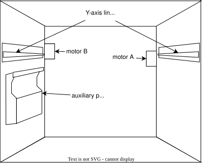
[src]Bambu Studio - H2S desktop software. Bambu studio provides access to MakerWorld (a repository of printable object), processes 3D models for printing by slicing them, and controls and gets feedback from the H2S. [src]
Bambu Handy - H2S mobile software. Bambu Handy provides access to MakerWorld as well as controls and gets feedback from the H2S. [src]
filament spool - A spool holding rolled up filament, which can be installed either in the AMS 2 Pro or the external spool holder. A filament spool can either be made of ...
⚠️NOTE️️️⚠️
Reusing a Bambu Lab plastic filament spool? Make sure you buy filament marketed as refill. I don't believe it has the be the same color or even the same material.
Stereolithography (STL) - File format for single 3D object's geometry, stored as triangles. It does not contain any other information such as color or texture. [src]
⚠️NOTE️️️⚠️
This is intended for the surface geometry of a single object? You can technically include internal geometry or disjointed geometry but if it doesn't form a closed "watertight" volume then it's "non-manifold" and invalid for 3D printing.
3D Manufacturing Format (3MF) - File format for 3D objects destined for 3D printing. 3MF supports color, text, and material properties. 3MF is preferred to STL because it can store multiple objects, print settings, and other metadata. [src].
Wavefront OBJ (OBJ) - File format for 3D object. OBJ files can contain much more information than just geometry (e.g., groupings of objects, vertex normals, and material / texture assignments). [src]
Standard for the Exchange of Product Model Data (STEP) Standard for the Exchange of Product Model Data - File format for 3D objects, in the context of Computer Aided Drafting (CAD). [src]
Scalable Vector Graphics (SVG) Scalable Vector Graphics - File format for 2D vector drawings. [src]
Geometric code (G-code) - File format for encoding the movement and actions of manufacturing devices such as 3D printers and CNC machines. G-code is structured as a list of instructions, controlling things like movement, speed, and depositing of material. [src].
nozzle clog - Filament stuck in a nozzle, blocking the flow of melted plastic. A nozzle clog may be due to ...
The typical sign of a nozzle clog is the toolhead's extruder "skipping", where filament doesn't come out when it should. [src]
⚠️NOTE️️️⚠️
I'm not sure if there's any audio or visual indication of a clog - clicking noises? toolhead's spinny logo jerking? something else? Documentation for other Bambu Lab printers mention this, but the current H2S documentation mentions no symptoms other than under-extrusion.
bed leveling - Probing of the heatbed to generate a surface map, used to dynamically adjust the nozzle's height during printing to compensate for heatbed unevenness. Bed leveling is typically performed as one of the initial steps of a new print job. [src]
⚠️NOTE️️️⚠️
The reference above seems to have incorrect information. It says that bed leveling adjusts the heatbed to be "perfectly parallel to the movement of the nozzle", implying that the heatbed's plane is being adjusted to be parallel to the toolhead's plane. That doesn't seem to be the case. The parallel-ness of the heatbed is adjusted manually using a process called bed tramming?
Bed leveling is only probing the heatbed for unevenness and attempting to compensate?
slicer - Software that performs slicing. Examples include Bambu Studio and Cura Slicer. [src]
slicing - Cutting a 3D model into thin horizontal layers and generating G-code to print those layers one by one. The G-code stacks the layers on top of each other to recreate the original object.
The process of slicing includes controlling for layer height and print speed, as well as introducing infill. [src]
layer height - The thickness of each individual layer within a sliced 3D model. [src]
infill - A pattern added to the interior of the 3D model being sliced, intended to strengthen/sturdiness of printed object. Infills are typically described using density and pattern type. The higher the density, the stronger the object. [src]
bridging - Part of a 3D model where there is a mid-air horizontal gap between two or more sides, leaving that part with nothing underneath it to help hold it up. During printing, supports are often added to bridging areas.
overhang - Part of a 3D model where there is a mid-air horizontal gap anchored to a single side, leaving that part "hanging over" with nothing underneath to help hold it up. During printing, supports are often added to overhanging areas.
support - Temporary area of the print added in during slicing to help keep overhangs and bridges from collapsing. Supports are intended to be removed once the print completes (e.g., snapped off). [src]
raft - A type of support used to elevate the model being printed off the build plate. [src]
interface - The final layer of a support structure, just before reaching the model that the structure is supporting. [src]
base - All layers of a support except for the interface. [src]
stringing - Thin unwanted stands of filament winding between different parts of a print. Stringing is a result of the nozzle moving around when either ...
warping - Deformation in the printed object, likely caused by uneven cooling. Deformations often manifest as shrunken areas or corners / edges that lift away from the build plate. [src]
under-extrusion - Extruder fails to deliver enough filament to the nozzle, resulting in gaps, weak layers, and / or incomplete sections in the object being printed. Under-extrusion may be caused by insufficient extruder pressure, clogged nozzle, bad temperature settings, or bad filament. [src]
over-extrusion - Extruder push too much filament to the nozzle, resulting in blobs, stringing, and / or los of detail on the object being printed. Over-extrusion may be caused by improper extruder calibration or using filament that's too large for the nozzle. [src]
⚠️NOTE️️️⚠️
The source also mentions "overly high flow rate" as a cause, but I don't know what it's actually referring to so I've left it out.
Polylactic Acid (PLA) - A filament material for non-functional prints. PLA is known for being forgiving to print with but isn't a fit for high stress or high-temperature applications. [src]
Polyethylene Terephthalate (PET) - A filament material for functional prints. [src]
Polyethylene Terephthalate Glycol (PETG) - A filament material for functional prints. PETG is PET glycol-modified, intended to make it less brittle and easier to print. [src]
Thermoplastic Polyurethane (TPU) - A filament material know for its flexibility / elasticity. [src]
Acrylonitrile Butadiene Styrene (ABS) - A filament material for resilient functional prints. [src]
Acrylonitrile Styrene Acrylate (ASA) - A filament material for resilient functional prints. ASA is similar to ABS, but weather resistant, UV resistant, and chemical resistant. [src]
Polycarbonate (PC) - A filament material for resilient functional prints. PC beats ABS ans ASA on mechanical strength and heat resistance. [src]
Polyamide / Nylon (PA) - A filament material know for being strong, flexible, and wear-resistant. [src]
Polyphthalamide - A filament material that's a variant of nylon, but geared towards industrial-grade and mechanical applications. [src]
Polyphenylene Sulfide - A filament material that's highly resilient, chosen for demanding and specialized engineering applications. [src].
High Flow (HF) - A filament material designation that means it's been modified for high speed printing. [src]
Carbon Fiber (CF) - A filament material designation that means it's been fortified with carbon fiber strands to enhance stiffness and strength. [src]
Glass Fiber (GF) - A filament material designation that means it's been fortified with glass fiber to enhance stiffness and strength. [src]